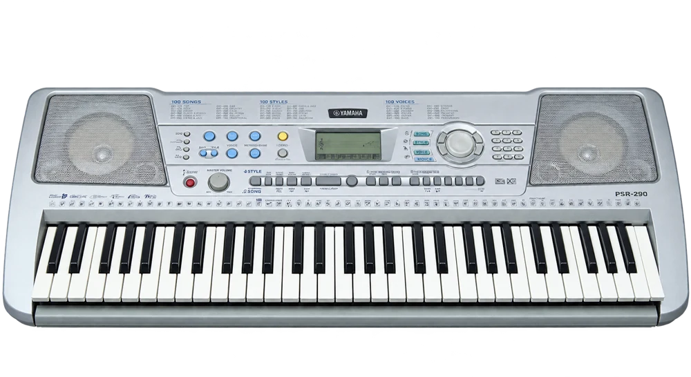

جایی برای تمرین
پایه محکم، صندلی مناسب و دسترسی به برق را در نظر بگیر. برای تمرین با هدفون، خروجی و هدفون سازگار را پیش از خرید امتحان کن.
چند رنگ صدا زیر انگشتان تو
کیبورد الکترونیکی خانوادهای از سازهای کلاویهای با صداها و قابلیتهای گوناگون است. برخی مدلها همراهی خودکار، ریتم و امکان تغییر رنگ صدا دارند. برنامه یادگیری میتواند بر اجرای ملودی، آکورد، همراهی یا استفاده از امکانات خود ساز تمرکز کند.

از صدای پیانو و سازهای دیگر تا صداهای طراحیشده، انتخابها گستردهاند. کیفیت و بیان هر صدا به مدل و تنظیم آن وابسته است.
انتخاب ساز از علاقه و تجربه آغاز میشود. برای تصمیم نهایی، ساز را از نزدیک امتحان کن و با مدرس دربارهٔ شرایط تمرینت حرف بزن.
ترتیب و سرعت آموزش با تجربه، تمرین و برنامهٔ استاد تنظیم میشود.
پایه محکم، صندلی مناسب و دسترسی به برق را در نظر بگیر. برای تمرین با هدفون، خروجی و هدفون سازگار را پیش از خرید امتحان کن.
حساسیت کلاویه به شدت لمس، اندازه استاندارد کلاویه و خروجیها را بررسی کن. کیبورد آموزشی، کنترلر MIDI و پیانوی دیجیتال یک وسیله واحد نیستند.
پیش از خرید ساز، نظر استاد را بپرس.بسیاری از کنترلرها صدای مستقل ندارند و به نرمافزار یا دستگاه صداساز نیاز دارند؛ مشخصات مدل را بررسی کن.
نه؛ نگهداشتن ضرب و شناخت ریتم همچنان بخش مهم یادگیری است.
با هزارآوا علاقههایت را مرور کن و تجربهٔ ریتم و شنوایی را امتحان کن.
آشنایی با هزارآوا ✦عکس: Moribunt · تصویر اصلی · CC BY-SA 3.0 · نسخهٔ بهینهشده و بدون پسزمینه.